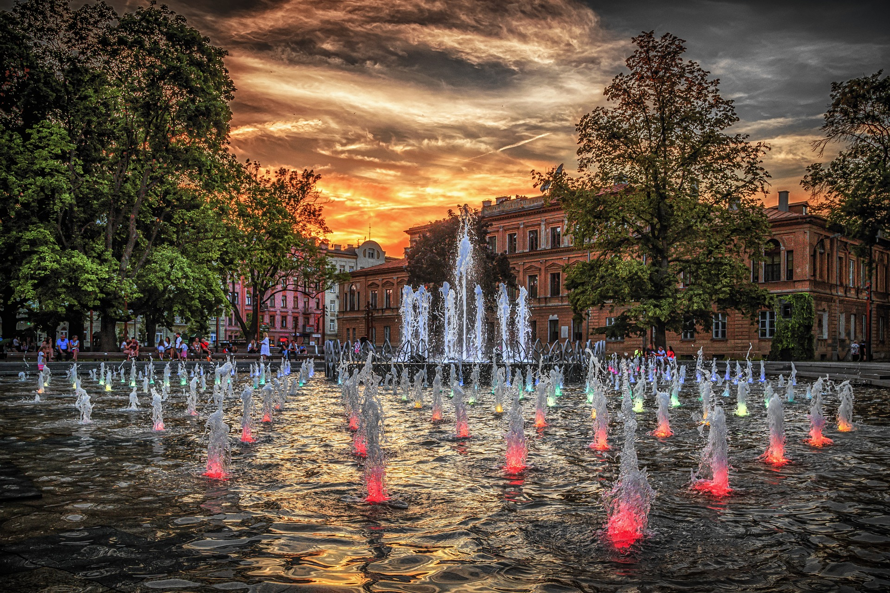

O Lublinie

Lublin - miasto na prawach powiatu we wschodniej Polsce, stolica województwa i powiatu lubelskiego, centralny ośrodek aglomeracji lubelskiej i Lubelskiego Obszaru Metropolitalnego. Ósme co do wielkości populacji miasto w Polsce, drugie w Małopolsce (reg. historyczny), o populacji wynoszącej 330,4 tys. mieszkańców. Jest wspaniałym miejscem do wypoczynku w każdą porę roku. Na naszej stronie znajdziesz miejsca, które warto odwiedzić, a także krótką jego historię, statystyki oraz kilka słów o gastronomii
Zobacz nasze miasto na mapie